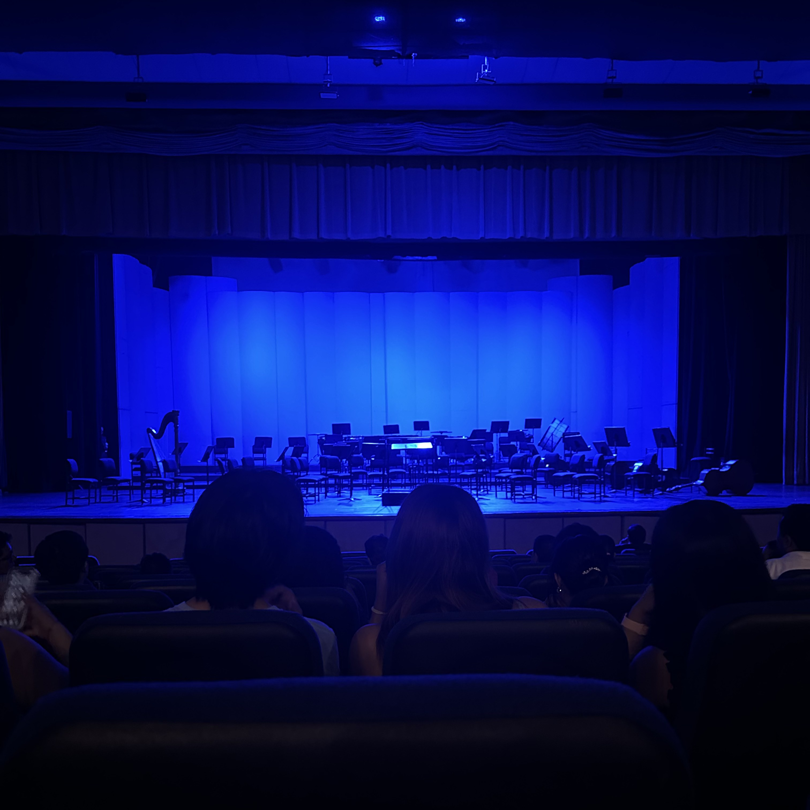
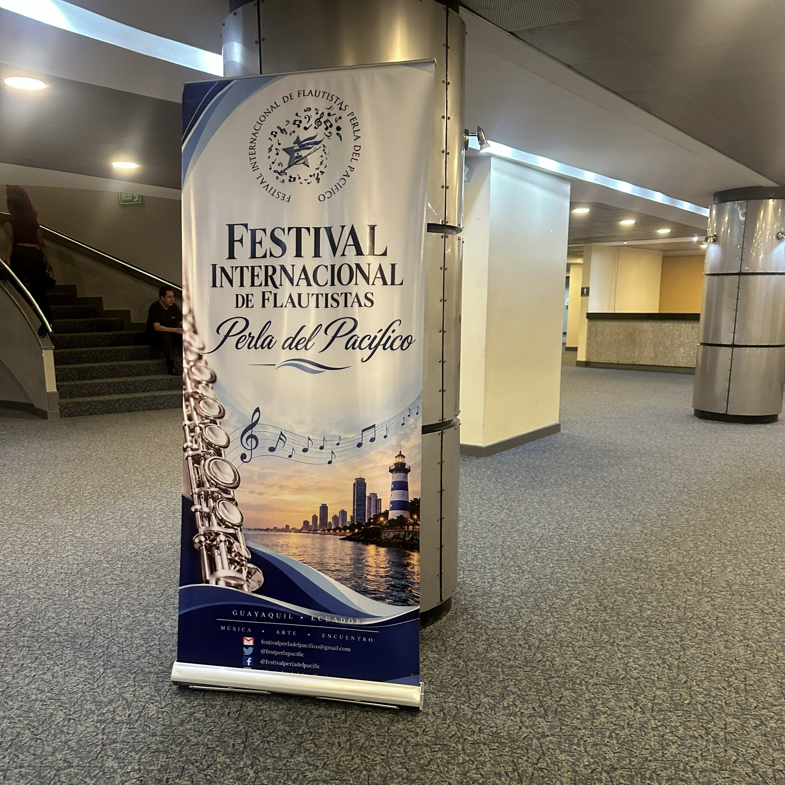
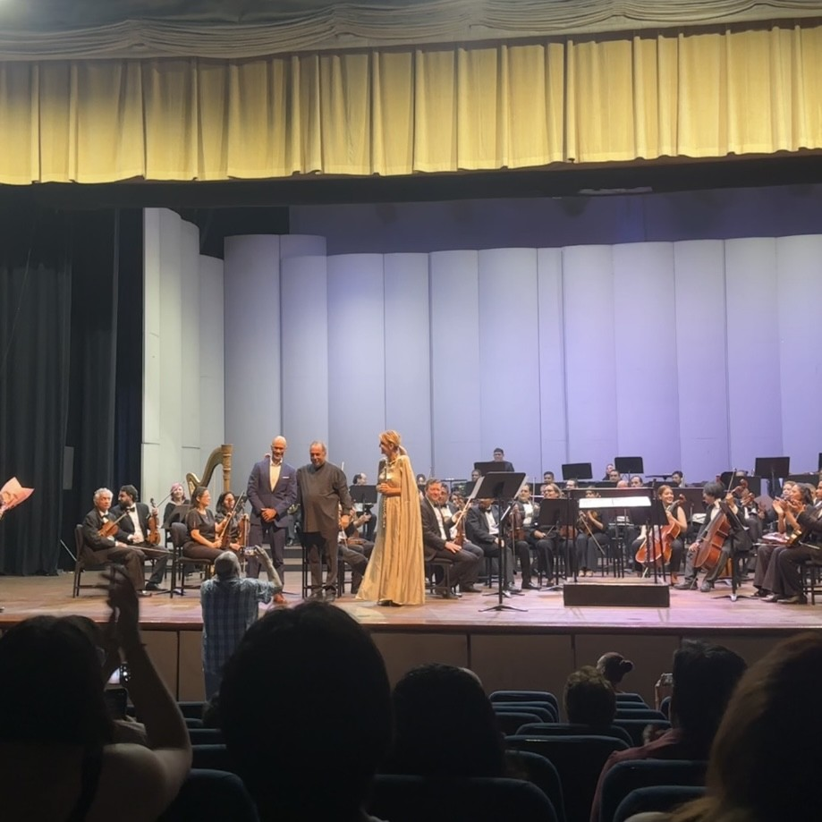
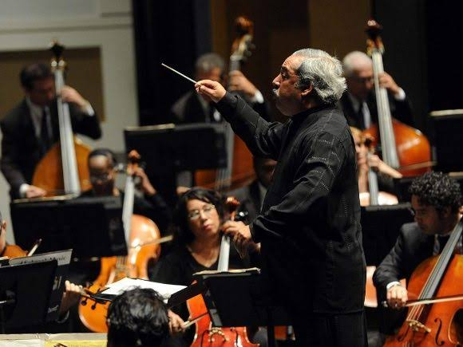
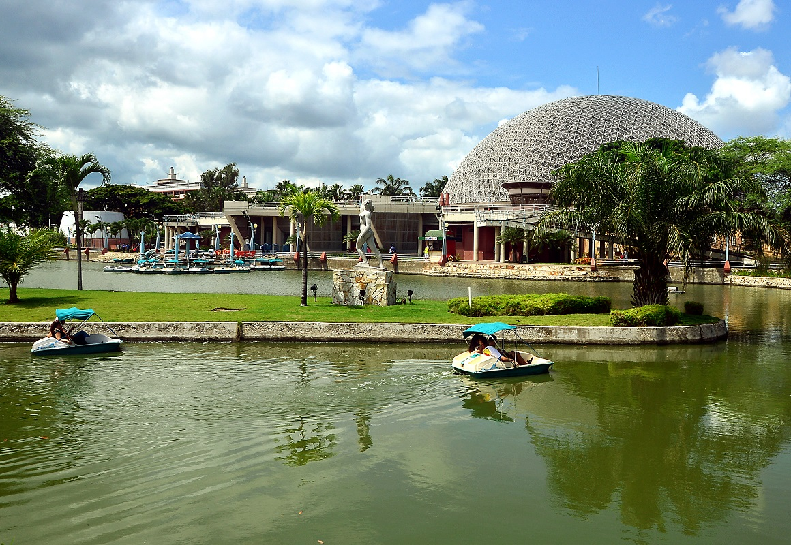
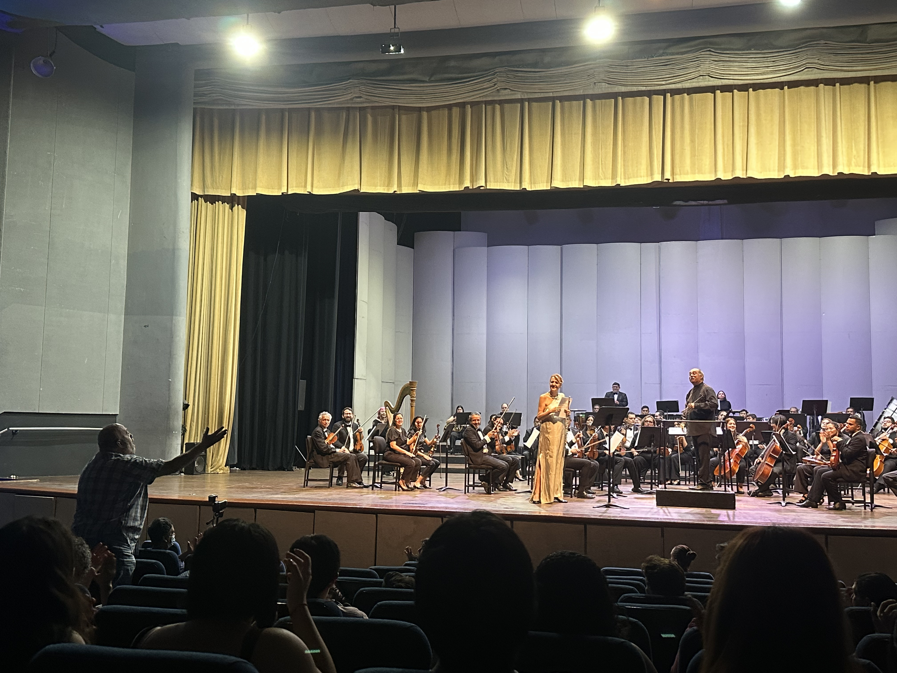
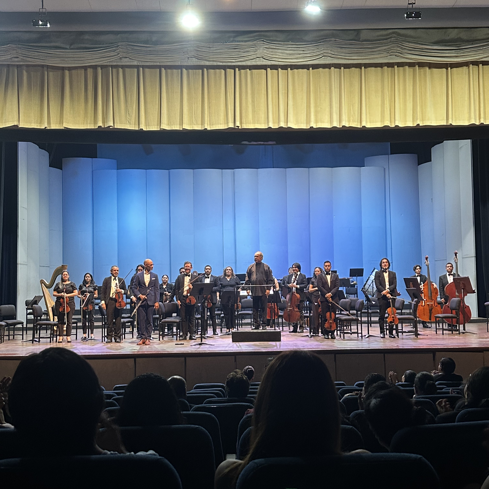
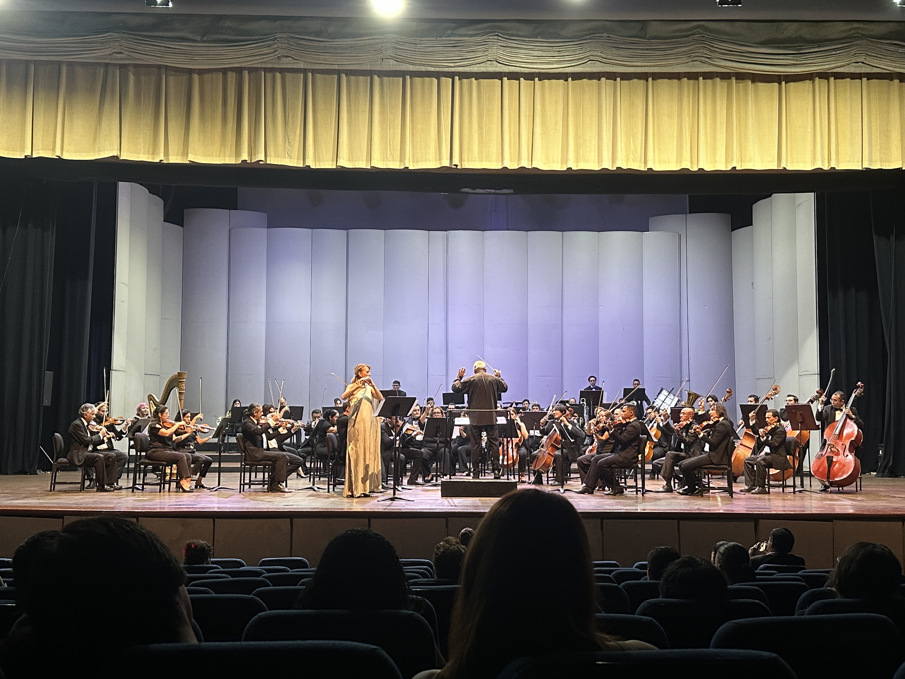
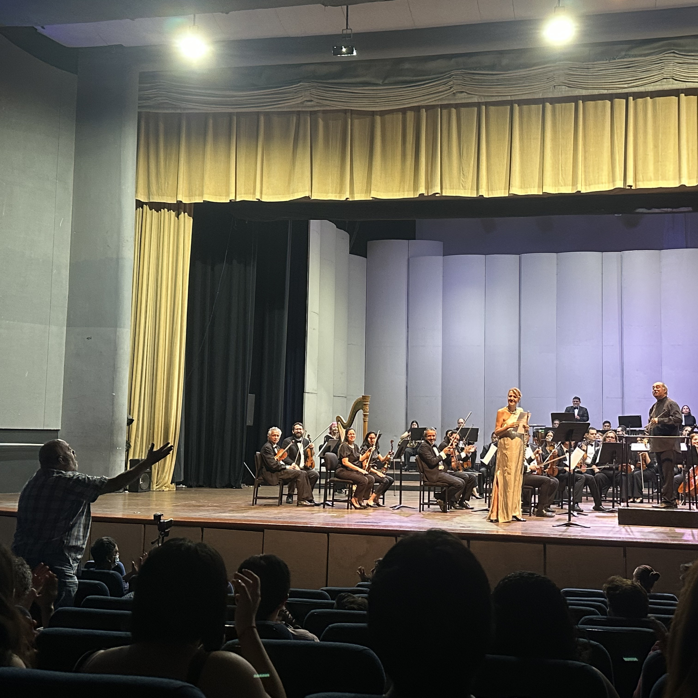
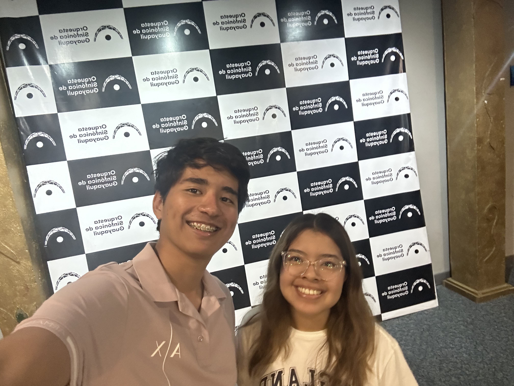

Apertura del festival
[Descripción breve de la fotografía.]
El Festival Perla del Pacífico es un evento cultural y artístico realizado en el Centro Cívico de Guayaquil para conmemorar el 9 de octubre.
Reunió a flautistas internacionales invitados, quienes interpretaron obras de Devienne, Magalif y Papadopoulos junto a la Orquesta Sinfónica, bajo la dirección de un director internacional invitado. Su propósito es acercar la música clásica a la comunidad y difundir la agenda cultural de la ciudad.

Flautistas internacionales llegaron a Guayaquil para compartir escenario con la Orquesta Sinfónica.

La Orquesta Sinfónica estuvo bajo la batuta de Enrique Pérez Mesa, director internacional invitado de Cuba.
Nacido el 8 de agosto de 1960, es uno de los más reconocidos internacionalmente directores de orquesta cubanos. Su integridad musical y expresividad le permiten ser invitados a conciertos en Brasil, España, Italia, Austria, México, Colombia, Chile, entre otros. Actualmente es director titular de la Orquesta Sinfónica Nacional (Cuba).

Obras interpretadas durante el concierto, con sus horarios y presentaciones.
[Título de la obra de François Devienne y su horario.]
[Título de la obra de Magalif y su horario.]
[Título de la obra de Papadopoulos y su horario.]
Acompañó a los solistas bajo la dirección del director invitado.
9 de octubre, en conmemoración de la fecha cívica de Guayaquil.
Comienza a las 19h00 hasta las 20h30
El festival se realizó en el Teatro Centro Cívico de Guayaquil, Ecuador.
Ubicado en el Parque Forestal que se encuentra en el sur de la ciudad, en la intersección de la Avenida Quito y la calle El Oro.

Momentos del Festival Perla del Pacífico.

[Descripción breve de la fotografía.]

Lelya Bayramoğullari interpretando

[Descripción breve de la fotografía.]

El maestro Enrique Pérez Mesa dandolo todo

Al final del espectaculo. El publico se levanto y se elogio el recital artistico realizado con unos aplausos

Integrantes del grupo presentes en el evento
¿Quieres saber más sobre el festival o sus próximas ediciones? Escríbenos.